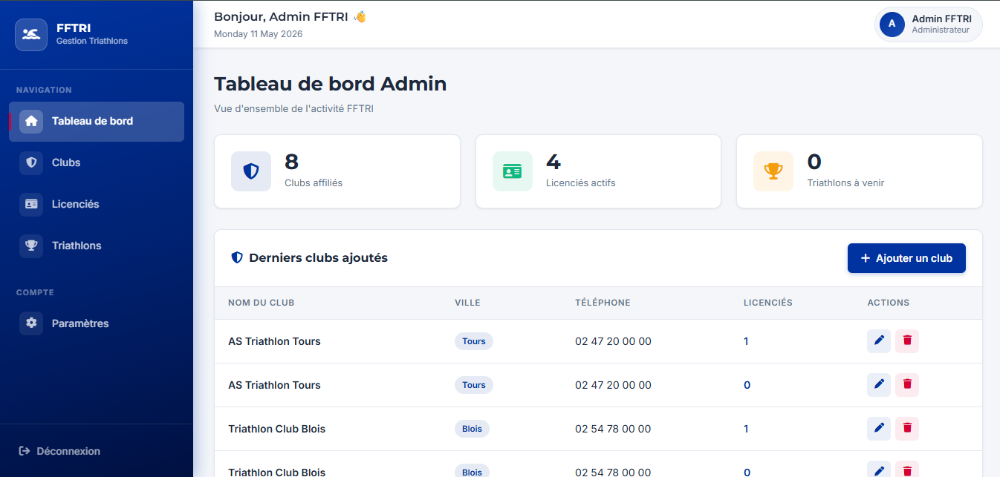

AP3 - BTS SIO SLAM
Gestion d'événement sportif
Application Triathlon
Application full-stack réalisée en équipe de 4 étudiants pour simplifier l'organisation et le suivi d'un triathlon — inscriptions, parcours et résultats.

Technologies
Contexte du projet
Le triathlon, discipline olympique depuis Sydney 2000, réunit natation, cyclisme et course à pied. En France, il est géré par la FFTRI puis par les ligues régionales et comités départementaux.
La mission consistait à développer une application web sécurisée destinée aux clubs et comités pour gérer les compétitions, les inscriptions et les résultats.
Objectifs
- Concevoir une application PHP/MySQL respectant l'architecture MVC
- Assurer ergonomie et simplicité de visualisation des pages
- Mettre en place l'authentification et la restriction d'accès
- Prévoir des tests fonctionnels avant déploiement
Contraintes techniques
- Respect des normes de développement (nommage, architecture, modularité)
- Base de données modélisée en MCD (Merise)
- Publication sur hébergement PHP/MySQL avec Git pour le versionning
Fonctionnalités
🔐 Authentification
Sessions sécurisées, rôles distincts entre participants, clubs et organisateurs.
📋 Inscriptions
Gestion des inscriptions par épreuve, validation et confirmation par email.
📊 Résultats & statistiques
Saisie et affichage des temps par épreuve, classements automatiques.
📱 Responsive
Interface adaptée aux mobiles pour une consultation sur le terrain.
Ce que j'ai appris
- Architecture d'une application CRUD complète en MVC
- Gestion des sessions et sécurité applicative
- Travail en équipe avec Git (branches, merges)
- Livraison avec tests fonctionnels structurés